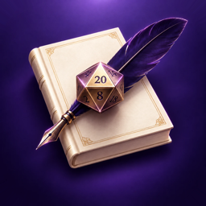
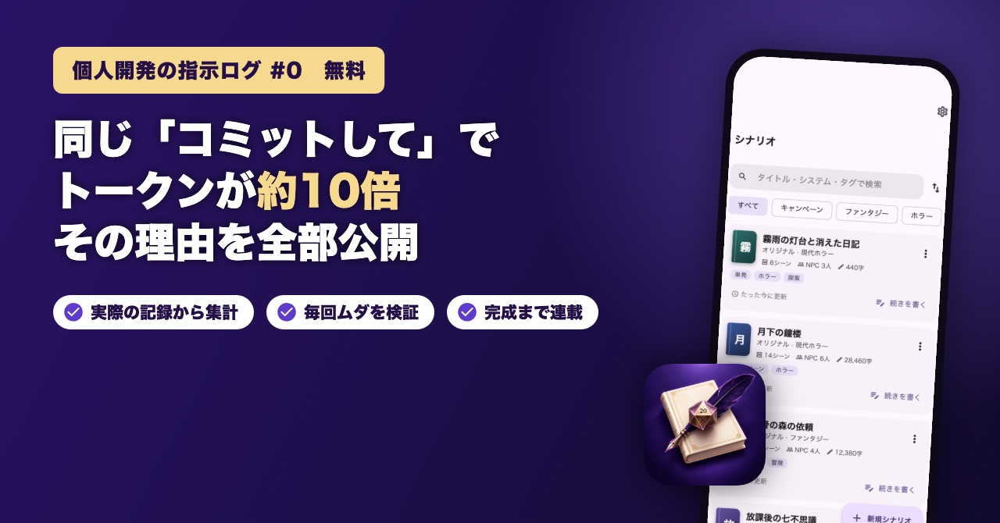

TRPGシナリオ工房
TRPG のシナリオを、章・シーン・分岐で書けるアプリ。
- 判定の成功・失敗で分かれる流れを、フローチャートで見渡せる
- 表紙・目次・立ち絵入りの頒布用 PDF を自動で作れる
- 小説投稿サイトや SNS に貼れる投稿文も自動で作れる
ひとりで作る、アプリとゲーム
MonoSense（モノセンス）は、個人でアプリやゲームを作って発信するときの名前です。開発には AI の Claude Code を使い、送った指示とそのムダまで、note の連載で公開しています。
APPS
TRPG・学習・健康のアプリを作っています。ストアに出たら、ここと X でお知らせします。

TRPG のシナリオを、章・シーン・分岐で書けるアプリ。
卓を立てて、すぐ遊ぶ。ブラウザで遊べる TRPG のオンラインセッションツール。
IT 資格の公開問題で敵を倒しながら進む、島めぐりバトル式の学習ゲーム。
筋トレと食事を、1 つのアプリで記録して振り返る。
新しいアプリは、X と note で先にお知らせします。
DEV LOG
アプリを作るときに AI（Claude Code）へ送った指示を、原文のまま note で公開しています。毎回、実際の作業の記録からトークン（AI の使用量）を数えて、どこでムダになったかと、往復なしで通る「改善した指示」まで書いています。
前半（何が起きたか・指示の原文）は無料、後半（検証と改善）は有料です。

まったく同じ一言が、1 回目は約18万トークン、2 回目は約188万トークン。この連載で何を公開するのかを紹介する、入口の記事です。
無料で読むマガジン（買い切り）
TRPGシナリオ工房の有料記事をまとめて読めます。アプリの完成までに増える記事も、追加料金なしで読めます。記事が増えるたびに値上げする予定です。
マガジンを見るFOLLOW
アプリの公開や、新しい記事が出たときにお知らせします。